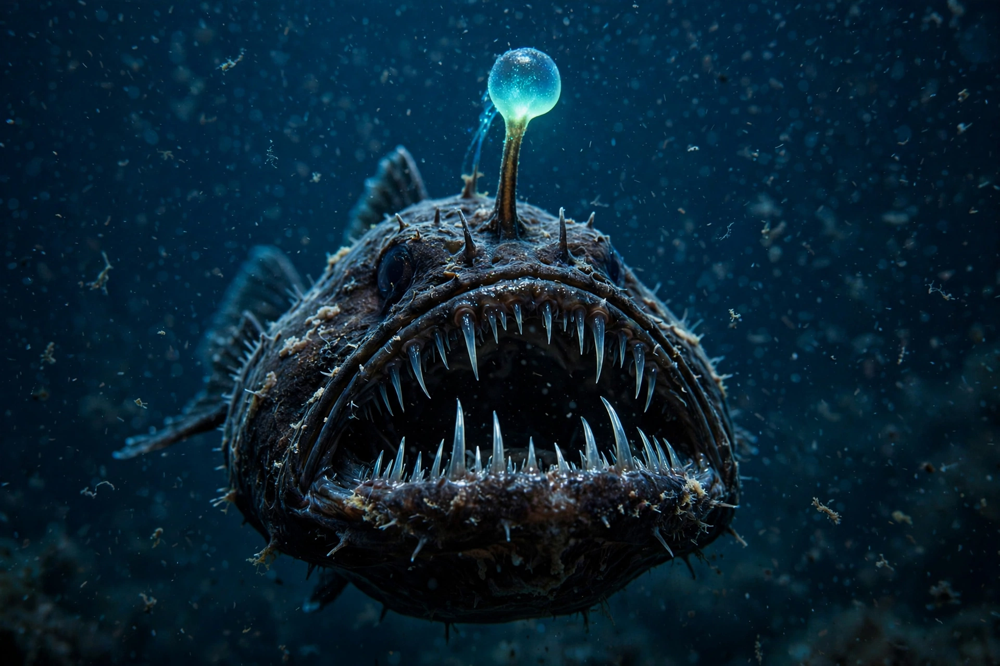

Anglerfish are fish of the teleost order Lophiiformes. They are bony fish named for their characteristic mode of predation, in which a modified dorsal fin ray — the illicium, tipped with a fleshy growth called the esca — acts as a lure for prey. Many deep-sea species have bioluminescent escae lit by symbiotic bacteria.
| Anglerfish | |
|---|---|
| Order | Lophiiformes |
| Families | About 18, with over 300 species |
| Habitat | From surface waters to the deep sea |
The first dorsal spine is modified into a movable "fishing rod". In ceratioid deep-sea anglerfishes the esca glows, attracting small fish and crustaceans within reach of the female's large, fang-lined jaws. Many species have expandable stomachs and can swallow prey larger than themselves.
Deep-sea anglerfishes show extreme sexual dimorphism. The tiny male, once found, bites into the female and in some species permanently fuses with her, his tissues and circulatory system merging with hers and becoming a sperm-producing appendage — a form of sexual parasitism unique among vertebrates. Recent research links this to degeneration of the adaptive immune system, which would otherwise reject the graft.
The order includes frogfishes, monkfishes (goosefishes), handfishes, coffinfishes and the deep-sea ceratioids. Shallow-water monkfish of the genus Lophius are commercially important food fish.
Anglerfish — recreated from memory.